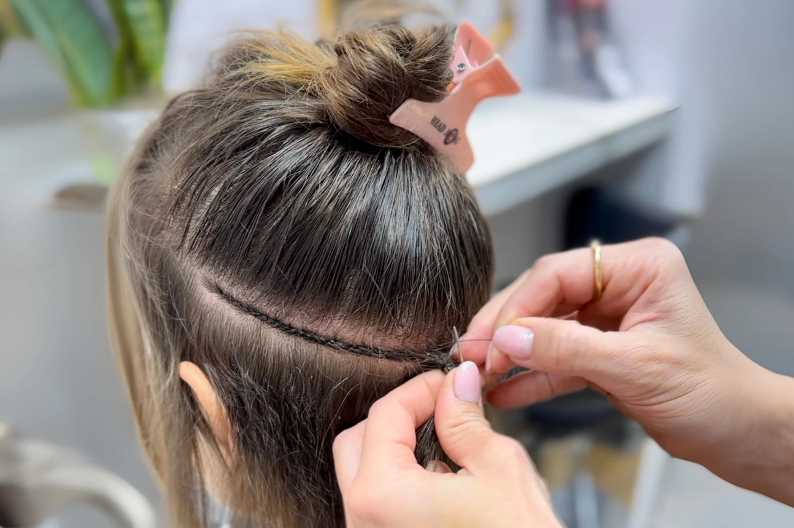
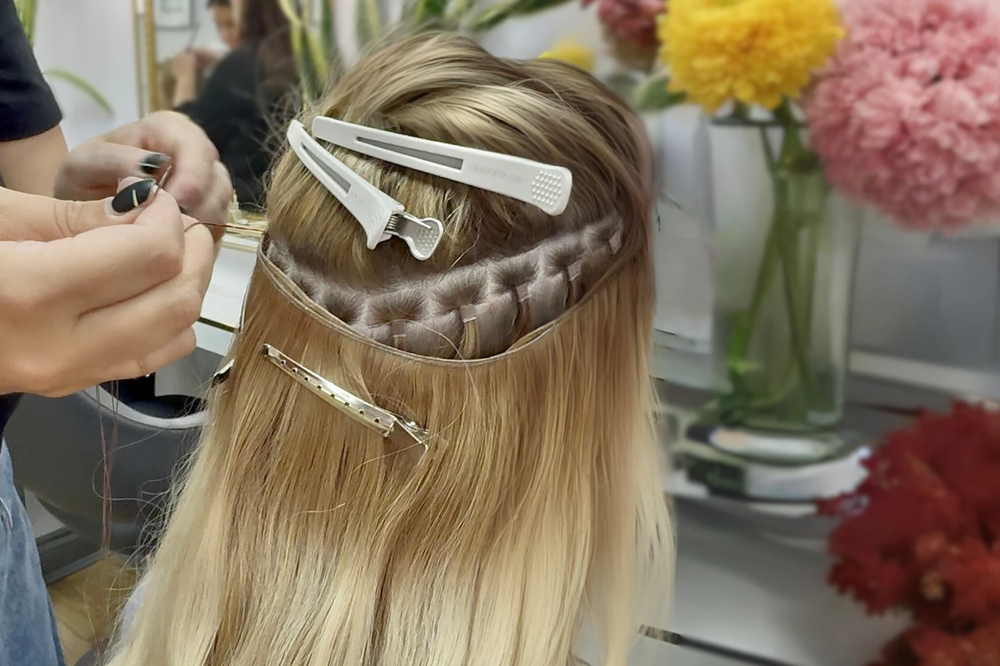

Weft Hair Extensions

Versatile, seamless and voluminous
What Are Weft Hair Extensions?
Weft extensions are a versatile way to add length and volume using either machine or hand tied wefts. Machine wefts are stitched by sewing machine and can be trimmed to size without damaging the hair, while hand tied wefts are individually knotted by hand for a slimmer, more comfortable fit. Slimmer wefts sit closer to the head, feel more secure, and shed less over time.
Wefts can be attached to your natural hair using tiny micro rings or braids, creating a semi permanent result without glue or heat, and for a temporary option they can also be fitted with clips. With Russian hair and custom colour blending, our wefts achieve a natural look that is easy to maintain and reuse.
- Machine or hand tiedTwo weft constructions
- From £645Per 100g of Russian hair
- No glue, no heatFitted with micro rings
- 100% Russian hairColour matched without dye
Our signature approach
What Makes Our Weft Hair Extensions Different?
Our wefts are made exclusively from Russian hair and are available as ready to buy machine wefts or as made to measure hand tied wefts. Each hand tied weft is created with care, blending strands from several ponytails to achieve a seamless, multi tonal colour match without the use of dye.
The hand tied construction creates a slim and comfortable weft that sits closer to the head and sheds less over time. Whether you choose machine or hand tied, our wefts combine high quality Russian hair with precise blending for a natural and long lasting result.

What to expect
The Weft Hair Extension Journey
- ConsultationIn our London or Manchester salon or by video call, we assess your hair and help you choose between a ready to buy machine weft or a made to measure hand tied weft.
- Colour matchFor a hand tied weft, we select and blend strands from several ponytails, sewn into a bespoke weft that perfectly matches your natural hair. Machine wefts come from our premade range of colours in stock.
- The fittingYour weft is secured in the salon with micro rings, no glue and no heat, for a comfortable, natural result.
- MaintenanceEvery 6 to 8 weeks the weft is repositioned, and with proper care the same wefts can last for years.
Before and afters
See Our Weft Transformations


Everything you want to know
Frequently Asked Questions
What makes Tatiana Karelina the best choice for weft hair extensions in London and Manchester?
Tatiana Karelina is known for perfecting hand tied and micro ring weft extensions that sit flat, feel weightless and blend flawlessly. Each weft is crafted from Russian hair, hand blended from multiple ponytails for a dye free colour match, then double stitched for strength and longevity. Applied with micro rings or braids without any glue or heat, the method protects your natural hair while offering long lasting comfort. With large in salon inventories, same day fittings and transparent pricing, Tatiana Karelina is the leading provider of weft extensions in London and Manchester.
When should I choose weft extensions?
Choose wefts if you want a fuller look with a semi permanent method that is versatile, comfortable, and reusable.
What are the benefits of weft hair extensions?
Weft hair extensions are a versatile way to achieve fuller, longer hair with a natural look. Because wefts cover a wider area of the head than strand by strand methods, the application is often quicker while still giving a seamless blend. Wefts also put less stress on individual strands, making them comfortable to wear. With the right installation and quality Russian hair, wefts can be reused multiple times, making them a cost effective option for clients seeking both length and volume.
Are hand tied weft extensions better than machine wefts?
Both hand tied and machine wefts have advantages. Hand tied wefts are slimmer and sit closer to the scalp, offering a more natural finish and increased comfort. They are created by blending strands from multiple Russian ponytails and sewing them together, giving the best possible colour match. Machine wefts are stronger and can be trimmed to size, making them highly versatile. The choice depends on your hair type, lifestyle, and the look you want to achieve.
How are weft hair extensions applied?
Wefts are usually applied using micro rings, which hold the weft securely without glue or heat. This method spreads the weight across multiple strands, making it gentle on your natural hair. Other application methods include clips for temporary use, or braiding and sewing for certain styles, but micro rings are the most popular semi permanent option as they are safe, reusable, and easy to maintain.
Are weft hair extensions suitable for fine hair?
Yes, weft extensions can be suitable for fine hair, but they must be applied carefully to avoid putting stress on delicate strands. Hand tied wefts are particularly good for fine hair because they are slim and lightweight, lying flat against the scalp for a discreet result. During your consultation, we will advise whether wefts are the best method or if another technique, such as tapes, may be more suitable for your hair type.
How long do weft hair extensions last?
With regular maintenance every 6 to 8 weeks, and proper care, the same wefts can last for years.
Will weft hair extensions be visible?
No, when professionally fitted wefts blend perfectly into your natural hair. Hand tied wefts are very slim and virtually undetectable, even if your hair is worn up. With careful colour matching and placement, wefts look and feel like your own hair.
Can I wash and style my hair with weft extensions?
Yes, you can wash and style your weft extensions just like your natural hair. We recommend using a sulphate free shampoo and avoiding heavy oils at the roots to keep the rings secure. Heat styling is safe as long as you use a heat protectant spray. Always dry the roots thoroughly after washing to prevent moisture from weakening the bonds.
What makes your weft extensions different?
Our wefts are made exclusively from Russian coloured hair, which is naturally strong, soft, and multi tonal. Hand tied wefts are created by blending hair from different ponytails to ensure a flawless colour match. Unlike mass produced wefts, ours are crafted in small batches with double stitching for durability. Combined with professional application using micro rings, our wefts provide a comfortable, discreet, and long lasting solution for clients who want beautiful, natural looking hair.
Fullness You Can Feel, Not See
Book a consultation in London or Manchester and compare machine and hand tied Russian hair wefts side by side. We will recommend the construction that suits your hair, honestly.
Book Consultation